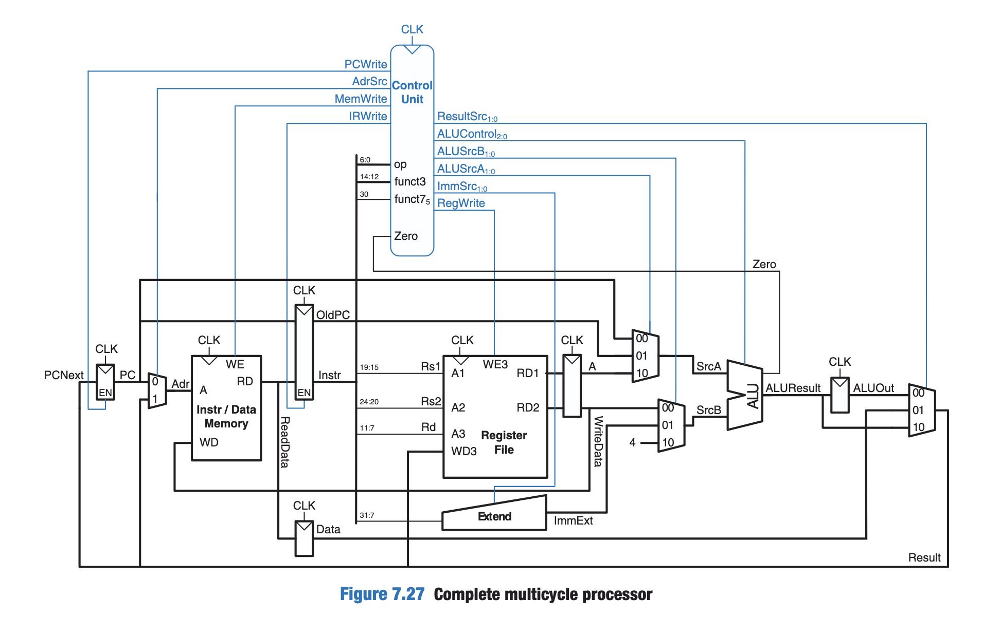

Portfolio
Some stuff I'm working on and have worked on.
AMP
A simple multicycle RISC-V processor implementation, collaboration with Fadi Ajaj. Image source: S. Harris and D. Harris "Digital Design and Computer Architecture". In progress as of Feb 2026.

rvem
A RISC-V instruction set assembler and emulator. Currently in progress as of Feb 2026.